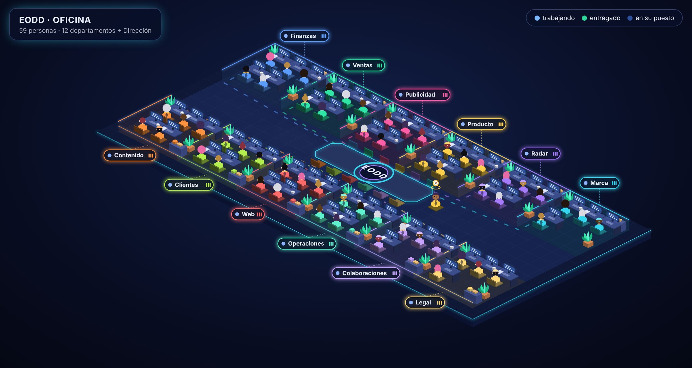
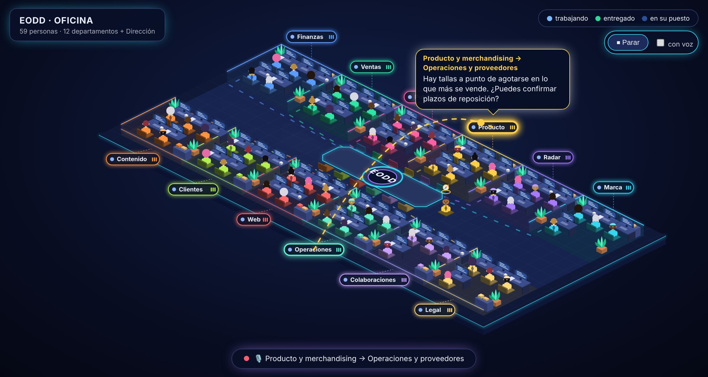

Una reunión de dirección
Finanzas, ventas, publicidad, producto, web y el resto entregan su informe. Dirección los lee y decide una hoja de ruta por plazos: esta semana, este mes, tres meses, un año y dos.
Para marcas de moda con tienda online
EODD junta tus ventas, tus anuncios, tu web y tus cuentas. Doce departamentos los analizan, se reúnen y te entregan una hoja de ruta con tareas concretas.

La oficina de EODD: 12 departamentos y Dirección. Captura del producto.
Qué recibes
Finanzas, ventas, publicidad, producto, web y el resto entregan su informe. Dirección los lee y decide una hoja de ruta por plazos: esta semana, este mes, tres meses, un año y dos.
Cada decisión se convierte en una tarea con responsable, prioridad y forma de comprobarla. Tú la marcas como hecha o en curso, y EODD no la repite. Si una importante lleva siete días parada, te avisa.
Por Telegram, a la hora que elijas: ventas de ayer frente a la media, productos que mejor funcionan, tallas a punto de agotarse, gasto en anuncios y el estado de tus tareas. Puede ir con nota de voz.
JARVIS conoce tus datos, tu hoja de ruta y tus tareas. Le preguntas por voz o escribiendo, y si le pides que marque una tarea como hecha, la marca.
Se hablan entre ellos
Producto avisa a Operaciones de que una talla se acaba. Publicidad propone pausar una campaña que no trae pedidos. En la oficina, pulsas «Escuchar la reunión» y ves cada mensaje salir de su sala, con una voz distinta por departamento.

Ejemplo ilustrativo
Cómo empieza
Tu tienda, tus anuncios, tu web y tu Excel de cuentas. Cada conexión tiene su guía y es de solo lectura.
Ves a cada equipo trabajar en la oficina y recibes la primera hoja de ruta con sus tareas.
Te llega a primera hora. Entre reuniones, marcas tareas y preguntas lo que quieras a JARVIS.
Conexiones
EODD lee fechas, importes, productos y estadísticas. No lee nombres de clientes ni documentos de identidad de tu contabilidad.
Tú mandas
Planes
Cada plan trae un consumo de IA mensual. Te avisamos al llegar al 80 % y, si se agota, las reuniones se reanudan el mes siguiente o amplías el plan.
Resumen diario, tablero de tareas, panel completo y una o dos reuniones al mes en modo ahorro.
Pedir una demoTodo lo del Básico y una reunión completa cada semana, o varias en modo ahorro.
Pedir una demoTodo lo del Estándar, con más reuniones y más conversación con JARVIS.
Pedir una demoLos servicios opcionales de terceros, como llamadas telefónicas o creación de fotos y vídeo, se pagan aparte. Precios de lanzamiento, sin IVA. El IVA se suma en el momento de pagar.
Preguntas
Hoy, para marcas de moda y producto físico con tienda online en Shopify. Los departamentos y los especialistas están escritos para ese tipo de negocio.
Acceso de lectura a tu tienda y a las herramientas que ya uses: Meta Ads, Google Analytics, Google Merchant, Klaviyo o Instagram. Si llevas las cuentas en un Excel, tenemos una plantilla. Un móvil con Telegram para el resumen diario. Te acompañamos en el alta.
No. Todas las conexiones son de solo lectura. EODD te dice qué haría y tú decides.
No. EODD analiza tus datos y propone tareas concretas, pero lo que ocurra al ejecutarlas depende de tu negocio. Por eso cada tarea lleva una forma de comprobar si ha funcionado.
Funciona con lo que conectes. Cada informe dice qué datos le faltan para trabajar mejor, en lugar de rellenar con suposiciones.
Demo
Te enseñamos EODD funcionando con tus datos y resolvemos tus dudas.
mvp033330@gmail.com
Escribir ahora